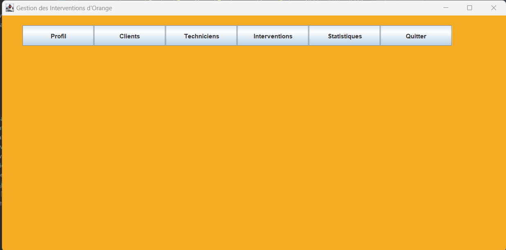
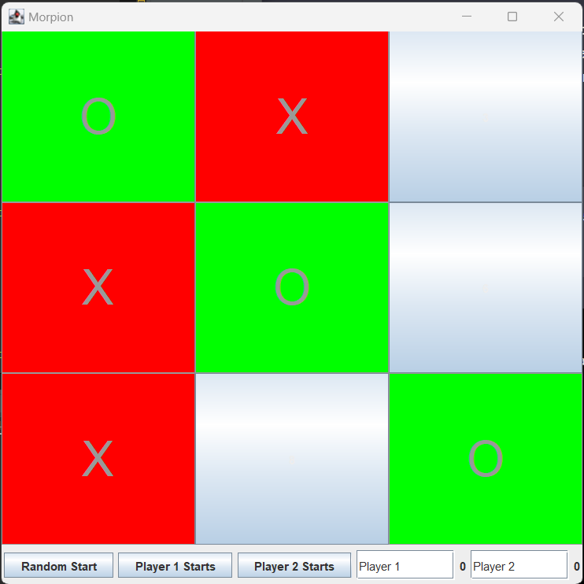
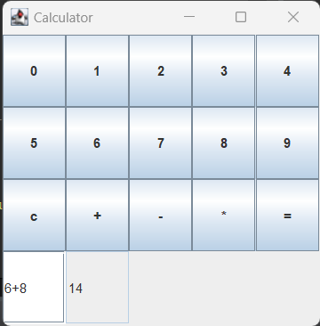
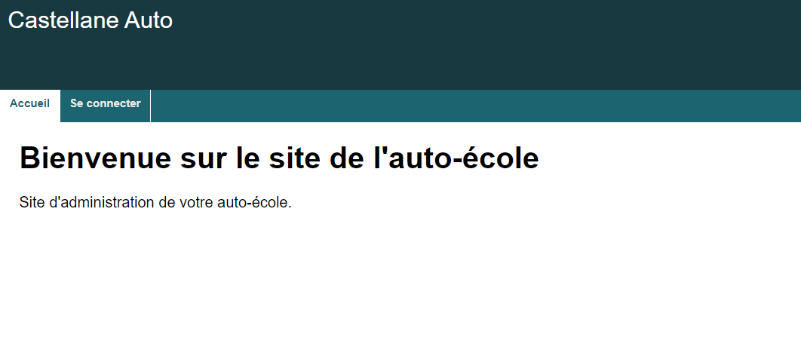
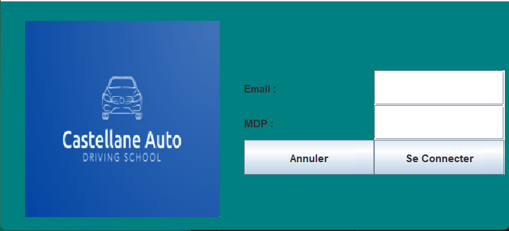
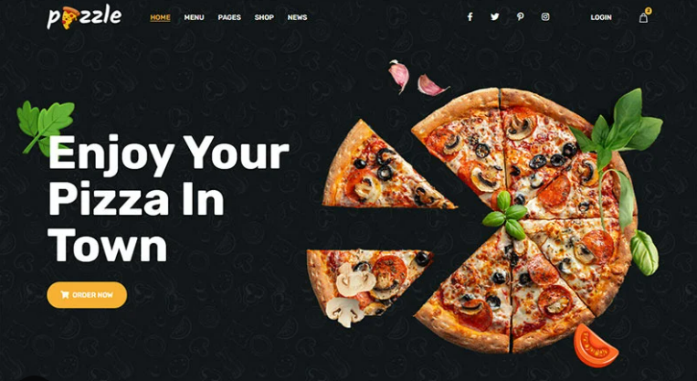
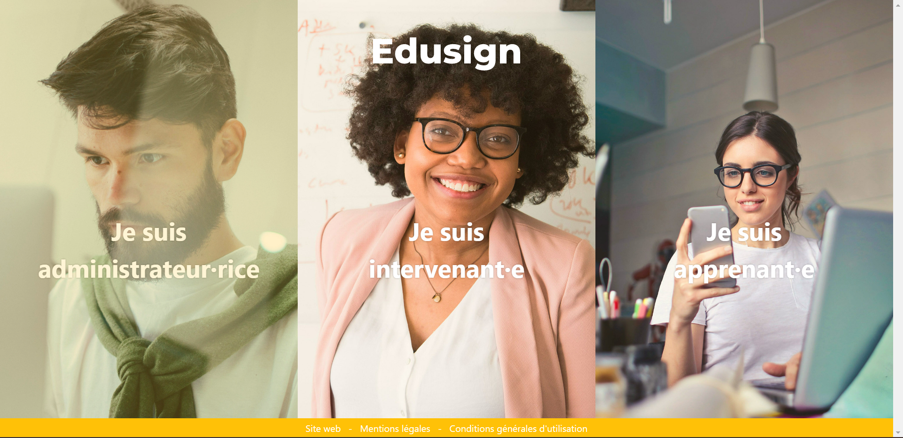

Hey, je suis Baha, je suis étudiant en deuxiéme année BTS SIO.
Titulaire d'un bac S et d'un DUT GIM, je poursuis à present mes études en deuxiéme année de BTS SIO à l'école IRIS à Paris. Ma passion pour le développement web et mon ambition de faire carrière dans ce domaine me motivent grandement dans mes études. j'ai choisi l'option SLAM pour me permettre d'acquérir les compétences nécessaires pour réaliser mon projet professionnel.

Projets réalisés en cours de mes deux années de BTS SIO
application Orange
Ce projet est une application développée en Java pour nous aider à nous entraîner et débuter avec ce langage de programmation. L'application permet aux administrat eurs de gérer les données des clients, les plannings des techniciens et autres informations pertinentes.
Morpion
Cette application est développée en Java. Elle permet à deux utilisateurs de jouer au morpion
Calculatrice simple
Cette application a été écrite pour me permettre d'apprendre les outils de base du langage Java en développant une calculatrice fonctionnelle. La calculatrice est capable d'effectuer des opérations arithmétiques simples telles que l'addition, la soustraction, la multiplication et la division.
Site web AUTO-ECOLE PPE
Ce site a été développé dans le cadre de mon PPE en utilisant les langages HTML, CSS, SQL et PHP. Il a été créé dans le but de permettre à une société de mieux gérer ses activités liées aux leçons de conduite. Les fonctionnalités incluses dans ce site comprennent la planification de leçons et l'enregistrement des progrès.
Application AUTO-ECOLE PPE
Cette application développée en Java propose les mêmes fonctionnalités que le site présenté ci-avant.
Experience professionnelle : stage en entreprise
Stage en Développement informatique
Apokia consulting, Amiens.
Du 04/07/2022 au 06/08/2022.
participation au développement d'un site modéle pour une Pizzeria.
Les technologies utilisées sont : HTML, CSS et PHP.
Stage en Développement informatique
IPF Conseil et Ressources, Paris.
Du 21/11/2022 au 23/12/2022.
Participation au développement du front-end du site de l'école IRIS.
Les technologies utilisées sont : HTML, CSS et JavaScript.